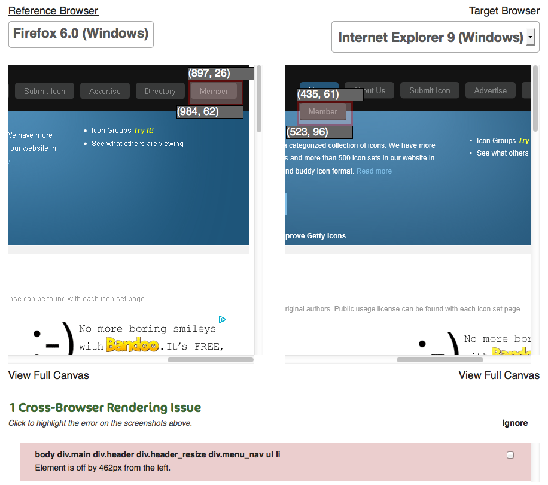

Web Consistency Testing Making the Web better for all
Introduction
Web Consistency Testing is a new form of Web testing that aims to answer the simple question: does this page look right? It's an automated approach to making sure a page looks the way we expect, whether that be cross-browser, over time (regression), in multiple locales, or whatever else we can think of. Kevin Menard, founder of Mogotest, presented an in-depth talk about what Web Consistency Testing is and presented a roadmap for building such a system at GTAC 2011. You can see his presentation below:
Download a copy of the slides.Motivation
We as an industry waste an insane amount of time trying to make sure our pages look the way we expect. While there is always going to be a certain level of skill required to convert a mockup into a styled page, once that's done we should be able to ship. But the reality is we need to deal with cross-browser rendering differences, we need to make sure changes to shared stylesheets and JavaScript files don't break other pages, we need to make sure that changing localized files doesn't break a layout, etc.
Until now, our choices have been ship & hope nothing breaks or compare every browser rendering and see if anything gets caught. I.e., our choices have been somewhere between not testing and exhaustive manual testing, which is a gigantic waste of human talent. Web Consistency Testing is all about automating how your users visually interact with your site. It addresses a massive gap in our Web testing process while putting emphasis back on the user.
Example
The best way to get a feel for Web Consistency Testing is to see what it can do for you. Below in Figure 1 is an example taken from Mogotest. Here we can see a page rendered in Firefox 6 and IE 9. The page has a typical set of nav buttons and exhibits a common issue when using floated elements. Here we can see that the "Member" button floats to the next line on IE 9, messing up the design. You can see this highlighted as a pink overlay on the two renderings. In addition, the coordinates for the upper-left and lower-right points is provided to give the developer more context about the problem.

Not only was the issue detected, but a tenet of Web Consistency Testing is to have semantic meaning behind that issue. At the bottom of the screenshot we see the list of all detected issues (incidentally, just one issue in this case). The issue includes the CSS selector for the element that's problematic, a notion of what dimension it's off in (here, off by the left), and the magnitude of the issue (here, 462px).
As you can see, we've provided an immense amount of information for a developer to fix the problem. We've narrowed the problem down to the precise element in error, we've indicated what the scope of the problem is, and we've visualized it. The best part is this entire process is automated. Not only was it automated, but it required no coding whatsoever from the tester because a Web Consistency Testing system uses the reference page (here, Firefox 6) as the source set of rules for any comparisons. The approach is completely adaptable and evolves as your pages do.